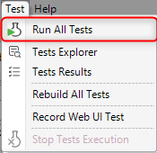
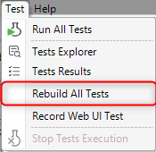
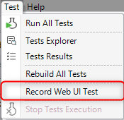
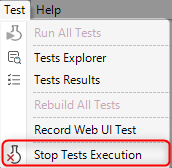
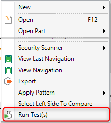
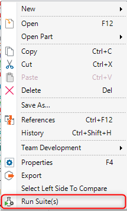
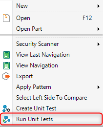
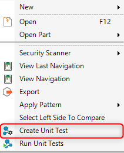
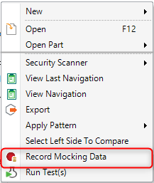

GXtest provides some commands that allow creating and running tests in a Knowledge Base. Among them, you can distinguish two types of commands: global commands and contextual commands.
Builds and runs all enabled tests present in the KB, i.e. unit tests, web UI tests, and UI tests.

Rebuild all enabled tests and, therefore, the objects called by them.

Creates, records and saves a new web UI test using GXtest Recorder extension: see more information about this feature in the Recorder-IDE integration article.

Stops the current tests execution in progress, or the build process, if any.

These options are available when specific objects are selected, typically tests or unit-testable objects (procedures, data providers, and business components).
- Target objects: tests. It becomes available for a selection from one to any number of test objects exclusively. Disabled when there is a test execution in progress.
- Action: Run the selected tests.

- Target objects: test suites. It becomes available for a selection from one to any number of Test Suite objects exclusively. Disabled when there is a test execution in progress.
- Action: Run the selected test suites.

- Target objects: unit-testable objects: procedures, data providers, and business components. It becomes available for a single unit-testable object. Disabled if there is a test execution in progress.
- Action: Run the unit tests that call the selected object.

- Target objects: unit-testable objects: procedures, data providers, and business components. It becomes available for a single unit-testable object.
- Action: Creates a unit test for the selected object according to Test Generation properties set for the current KB.

- Target objects: unit tests. It becomes available for a single unit test selection. Disabled if there is a test execution in progress.
- Action: Run the selected unit test, recording all queries to the database during its execution. See Database Mocking for more information about this feature.
